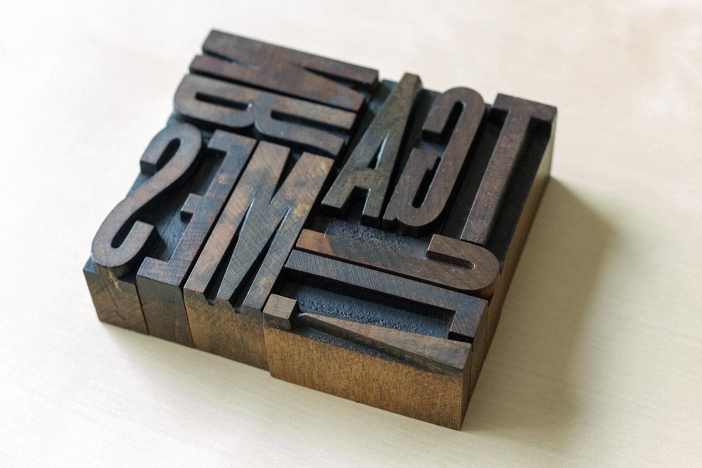

Seventy years of Swiss posters
The Kessler Archive’s index, now online: search by designer, year or printer.
9,400
Designers, A to Z
Pick a letter to search every surname that begins with it.

By the press that printed it
Follow one printer across seventy years of sheets.
Search the whole index
Fill one field, two or all three.